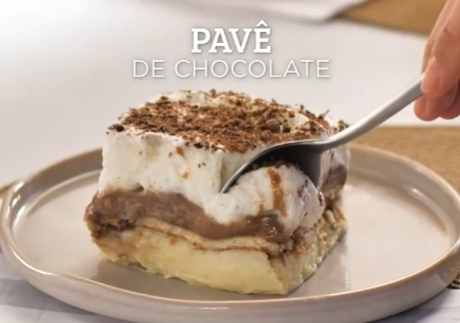

Pavê de Chocolate
Ingredientes
- 1 pacote de bolacha maisena
- 1/2 copo de leite
- 1 colher(sobremesa)de chocolate em pó
Creme Branco
- 1 lata de leite condensado
- 1 lata de leite de vaca(use a medida da lata de leite condensado)
- 1 colher(sobremesa)de amido de milho
- 2 gemas
Creme de Chocolate
- 1 lata de leite condensado
- 1 lata de leite de vaca (a medida da lata de leite condensado)
- 1 colher (sobremesa) de amido de milho
- 2 gemas
- 4 colheres de chocolate em pó
Cobertura
- 4 claras
- 4 colheres de açúcar
- 1 lata de creme de leite sem soro
Passo-a-passo
Modo de preparo
- Em uma tigela, misture o leite e o chocolate em pó até que esteja completamente dissolvido.
- Molhe as bolachas no leite e reserve.
Creme Branco
- Pegue os Ingredientes e tire todos de suas respectivas embalagens.
- Em uma panela, leve todos os ingredientes ao fogo médio e misture até obter uma consistência grossa e cremosa.
Creme de Chocolate
- Repita o processo feito no Creme Branco.
Para a Cobertura
- Pegue as claras, açúcar, e misture em alta velocidade em um recipiente.
- Bata as claras em neve com o açúcar até obter um creme consistente.
- Adicione o creme de leite e misture delicadamente.
Montagem
- Pegue um refratário grande.
- Despeje o Creme Branco, metade das bolachas, Creme de Chocolate, bolachas e claras em neve.
Aqui esta seu pavê:

Mas afinal, é pra ver ou pra comer?
Fim. | Francisco Vargas